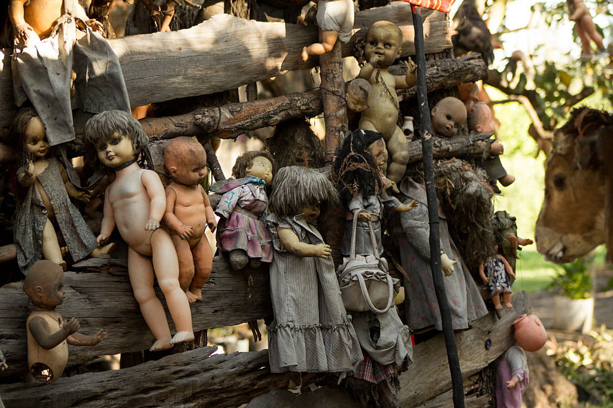

1.Wyspa lalek, Meksyk

To miejsce jak z nocnego koszmaru znajduje się nieopodal Mexico City. Na rosnących na tej wyspie drzewach z każdej strony zwisają zniszczone dziecięce lalki – brudne, połamane, bez kończyn. Skąd się tam wzięły? Historia zaczyna się sześciesiąt lat temu, kiedy ówczesny opiekun wyspy Julian Santana nie zdołał uratować tonącej dziewczynki. Na wodzie pozostała tylko jej lalka. Od tego czasu, nękany koszmarami Julian gromadzi stare zabawki i przynosi je na wyspę, żeby uczcić pamięć tragicznie zmarłego dziecka.
2.Cinco Saltos, Argentyna
Mieszkańcy Cinco Saltos nazywają je Miastem Jeziora i Róż. Nie chcą pamiętać, że w regionie Rio Negro praktykowano niegdyś czarną magię. Miejsce to uważa się za skażone, a wywołane dawniej duchy nie dają spokoju mieszkańcom tej okolicy.
3.Montpelier Hill, Irlandia
Montpelier to wzgórze w pobliżu Dublina. Do dziś stoją tam ruiny domu łowieckiego zbudowanego w XVIII wieku przez Williama Conolly. Miejsce to znajduje się pod panowaniem sił nadprzyrodzonych, wiąże się je z okultyzmem i satanizmem. Najczęściej widywaną tutaj zjawą jest dziwny, czarny kot… Krążą także legendy o odprawianych tu dawniej czarnych mszach.